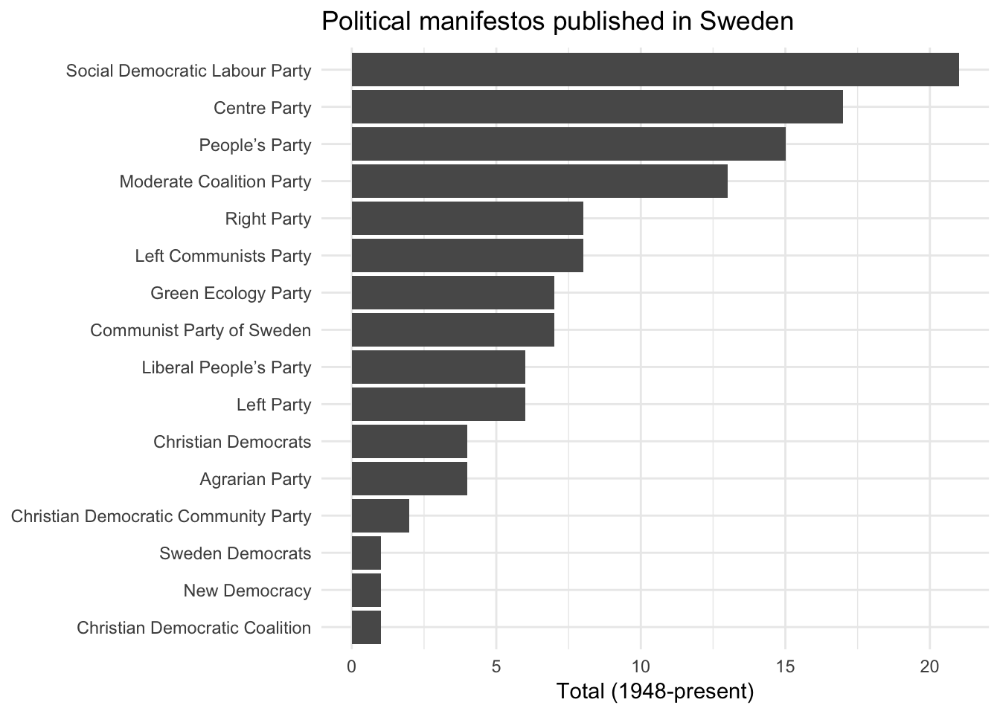
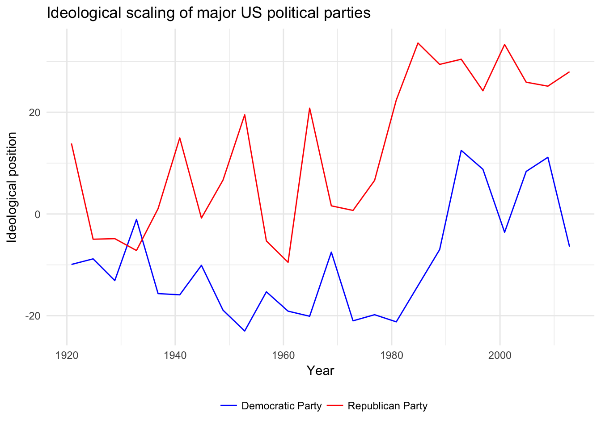
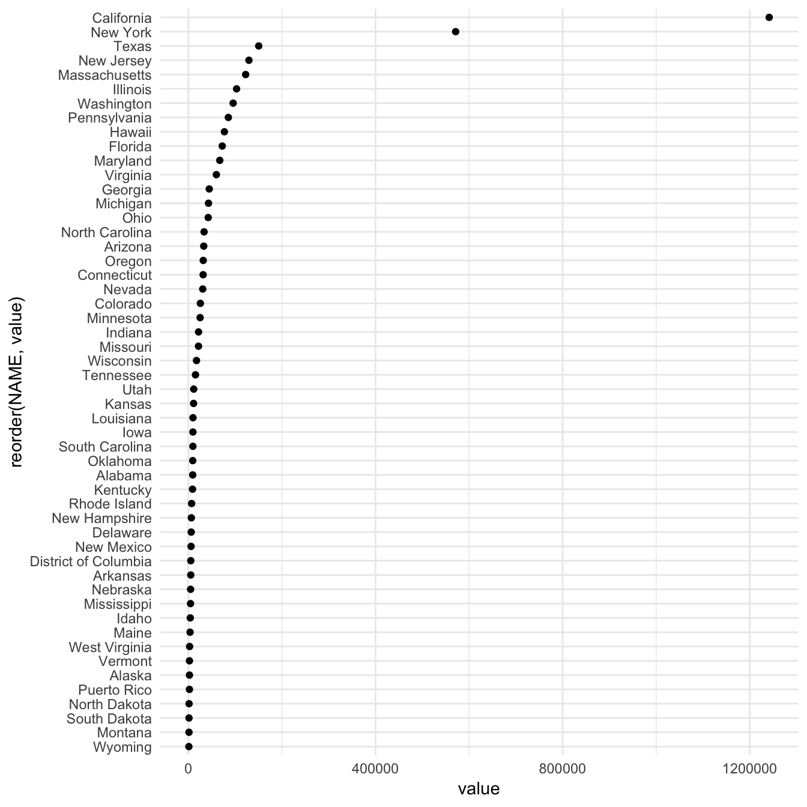
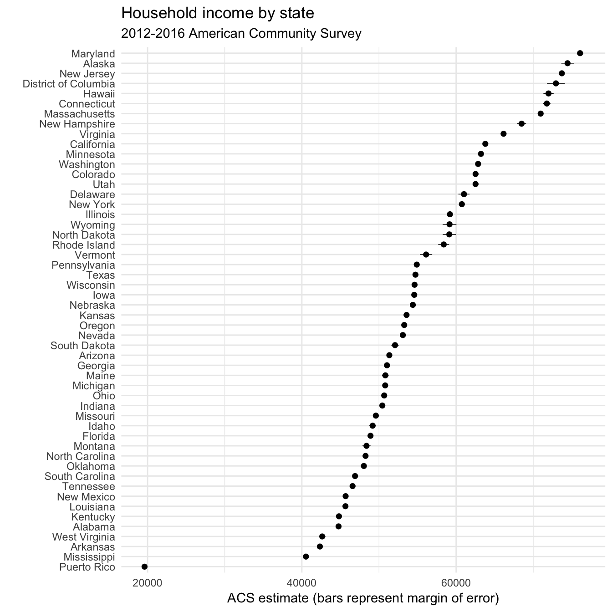
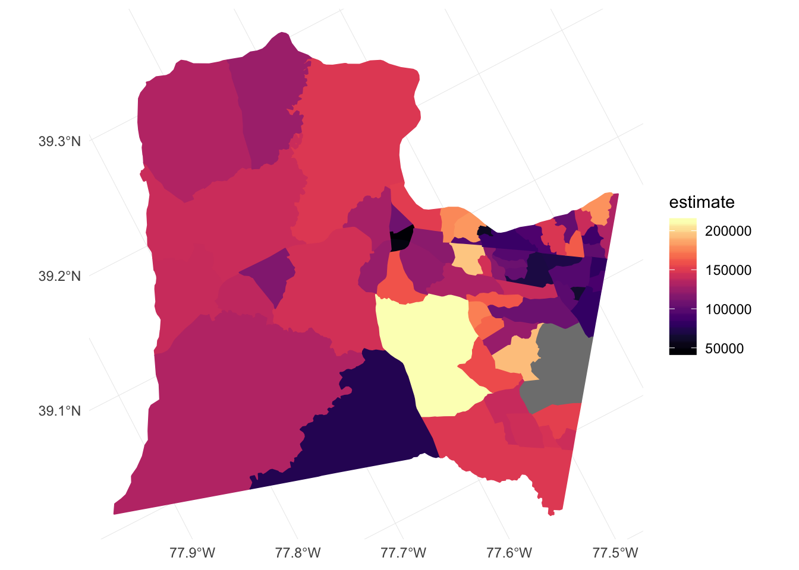

Getting data from the web: API access
library(tidyverse)
library(forcats)
library(broom)
library(wordcloud)
library(tidytext)
library(viridis)
set.seed(1234)
theme_set(theme_minimal())Methods for obtaining data online
There are many ways to obtain data from the Internet. Four major categories are:
- click-and-download on the internet as a “flat” file, such as .csv, .xls
- install-and-play an API for which someone has written a handy R package
- API-query published with an unwrapped API
- Scraping implicit in an html website
Click-and-Download
In the simplest case, the data you need is already on the internet in a tabular format. There are a couple of strategies here:
- Use
read.csvorreadr::read_csvto read the data straight into R - Use the
downloaderpackage orcurlfrom the shell to download the file and store a local copy, then useread_csvor something similar to read the data into R- Even if the file disappears from the internet, you have a local copy cached
Even in this instance, files may need cleaning and transformation when you bring them into R.
Data supplied on the web
Many times, the data that you want is not already organized into one or a few tables that you can read directly into R. More frequently, you find this data is given in the form of an API. Application Programming Interfaces (APIs) are descriptions of the kind of requests that can be made of a certain piece of software, and descriptions of the kind of answers that are returned. Many sources of data - databases, websites, services - have made all (or part) of their data available via APIs over the internet. Computer programs (“clients”) can make requests of the server, and the server will respond by sending data (or an error message). This client can be many kinds of other programs or websites, including R running from your laptop.
Install and play packages
Many common web services and APIs have been “wrapped”, i.e. R functions have been written around them which send your query to the server and format the response.
Why do we want this?
- provenance
- reproducible
- updating
- ease
- scaling
Sightings of birds: rebird
rebird is an R interface for the ebird database. e-Bird lets birders upload sightings of birds, and allows everyone access to those data.
install.packages("rebird")library(rebird)Search birds by geography
The ebird website categorizes some popular locations as “Hotspots”. These are areas where there are both lots of birds and lots of birders. Once such location is at Lincoln Park Zoo in Chicago. You can see data for this site at http://ebird.org/ebird/hotspot/L1573785
At that link, you can see a page like this:
Lincoln Park Zoo
The data already look to be organized in a data frame! rebird allows us to read these data directly into R.
The ID code for Lincoln Park Zoo is L1573785
ebirdhotspot(locID = "L1573785") %>%
as_tibble()## # A tibble: 24 x 11
## lng locName howMany sciName
## <dbl> <chr> <int> <chr>
## 1 -87.63272 Lincoln Park Zoo, Chicago 2 Nycticorax nycticorax
## 2 -87.63272 Lincoln Park Zoo, Chicago 15 Larus delawarensis
## 3 -87.63272 Lincoln Park Zoo, Chicago 15 Hirundo rustica
## 4 -87.63272 Lincoln Park Zoo, Chicago 2 Poecile atricapillus
## 5 -87.63272 Lincoln Park Zoo, Chicago 1 Sitta carolinensis
## 6 -87.63272 Lincoln Park Zoo, Chicago 15 Sturnus vulgaris
## 7 -87.63272 Lincoln Park Zoo, Chicago 13 Agelaius phoeniceus
## 8 -87.63272 Lincoln Park Zoo, Chicago 8 Quiscalus quiscula
## 9 -87.63272 Lincoln Park Zoo, Chicago 3 Spinus tristis
## 10 -87.63272 Lincoln Park Zoo, Chicago 35 Passer domesticus
## # ... with 14 more rows, and 7 more variables: obsValid <lgl>,
## # locationPrivate <lgl>, obsDt <chr>, obsReviewed <lgl>, comName <chr>,
## # lat <dbl>, locID <chr>We can use the function ebirdgeo to get a list for an area. (Note that South and West are negative):
chibirds <- ebirdgeo(lat = 41.8781, lng = -87.6298)
chibirds %>%
as_tibble() %>%
str()## Classes 'tbl_df', 'tbl' and 'data.frame': 137 obs. of 11 variables:
## $ lng : num -87.6 -87.6 -87.6 -87.6 -87.6 ...
## $ locName : chr "U. of Chicago-University Ave. from 61st to 58th" "U. of Chicago-University Ave. from 61st to 58th" "U. of Chicago-University Ave. from 61st to 58th" "U. of Chicago-University Ave. from 61st to 58th" ...
## $ howMany : int 5 2 2 3 1 3 4 3 7 1 ...
## $ sciName : chr "Corvus brachyrhynchos" "Passer domesticus" "Chaetura pelagica" "Spizella passerina" ...
## $ obsValid : logi TRUE TRUE TRUE TRUE TRUE TRUE ...
## $ locationPrivate: logi TRUE TRUE TRUE TRUE TRUE TRUE ...
## $ obsDt : chr "2017-07-12 08:40" "2017-07-12 08:40" "2017-07-12 08:40" "2017-07-12 08:40" ...
## $ obsReviewed : logi FALSE FALSE FALSE FALSE FALSE FALSE ...
## $ comName : chr "American Crow" "House Sparrow" "Chimney Swift" "Chipping Sparrow" ...
## $ lat : num 41.8 41.8 41.8 41.8 41.8 ...
## $ locID : chr "L1242933" "L1242933" "L1242933" "L1242933" ...Note: Check the defaults on this function. e.g. radius of circle, time of year.
We can also search by “region”, which refers to short codes which serve as common shorthands for different political units. For example, France is represented by the letters FR
frenchbirds <- ebirdregion("FR")
frenchbirds %>%
as_tibble() %>%
str()## Classes 'tbl_df', 'tbl' and 'data.frame': 267 obs. of 11 variables:
## $ lng : num 7.75 -1.17 -1.17 -1.17 -1.17 ...
## $ locName : chr "Strasbourg (cité)" "Sainte-Eulalie-en-Born " "Sainte-Eulalie-en-Born " "Sainte-Eulalie-en-Born " ...
## $ howMany : int 1 8 1 3 5 2 3 25 1 2 ...
## $ sciName : chr "Fulica atra" "Hirundo rustica" "Troglodytes troglodytes" "Motacilla alba" ...
## $ obsValid : logi TRUE TRUE TRUE TRUE TRUE TRUE ...
## $ locationPrivate: logi FALSE TRUE TRUE TRUE TRUE TRUE ...
## $ obsDt : chr "2017-07-12 12:27" "2017-07-12 07:00" "2017-07-12 07:00" "2017-07-12 07:00" ...
## $ obsReviewed : logi FALSE FALSE FALSE FALSE FALSE FALSE ...
## $ comName : chr "Eurasian Coot" "Barn Swallow" "Eurasian Wren" "White Wagtail" ...
## $ lat : num 48.6 44.3 44.3 44.3 44.3 ...
## $ locID : chr "L3737750" "L6072426" "L6072426" "L6072426" ...Find out WHEN a bird has been seen in a certain place! Choosing a name from chibirds above (the Bald Eagle):
warbler <- ebirdgeo(species = 'Setophaga coronata', lat = 41.8781, lng = -87.6298)
warbler %>%
as_tibble() %>%
str()## Classes 'tbl_df', 'tbl' and 'data.frame': 0 obs. of 0 variablesrebird knows where you are:
ebirdgeo(species = 'Setophaga coronata') %>%
as_tibble() %>%
knitr::kable()## Warning: As a complete lat/long pair was not provided, your location was
## determined using your computer's public-facing IP address. This will likely
## not reflect your physical location if you are using a remote server or
## proxy.Searching geographic info: geonames
# install.packages(geonames)
library(geonames)API authentication
Many APIs require you to register for access. This allows them to track which users are submitting queries and manage demand - if you submit too many queries too quickly, you might be rate-limited and your requests de-prioritized or blocked. Always check the API access policy of the web site to determine what these limits are.
There are a few things we need to do to be able to use this package to access the geonames API:
- go to the geonames site and register an account.
- click here to enable the free web service
- Tell R your geonames username. You could run the line
options(geonamesUsername = "my_user_name")in R. However this is insecure. We don’t want to risk committing this line and pushing it to our public GitHub page! Instead, you should create a file in the same place as your .Rproj file. To do that, run the following command from the R console:
file.edit(here::here(".Rprofile"))Note: you need to have the
herepackage installed for that code to work.
This will create a special file called .Rprofile in the same directory as your .Rproj file (assuming you are working in an R project). The file should open automatically in your RStudio script editor. Add
options(geonamesUsername = "my_user_name")to that file, replacing my_user_name with your Geonames username.
Important
- Make sure your
.Rprofileends with a blank line - Make sure
.Rprofileis included in your.gitignorefile, otherwise it will be synced with Github - Restart RStudio after modifying
.Rprofilein order to load any new keys into memory - Spelling is important when you set the option in your
.Rprofile - You can do a similar process for an arbitrary package or key. For example:
# in .Rprofile
options("this_is_my_key" = XXXX)
# later, in the R script:
key <- getOption("this_is_my_key")This is a simple means to keep your keys private, especially if you are sharing the same authentication across several projects. Remember that using .Rprofile makes your code un-reproducible. In this case, that is exactly what we want!
Using Geonames
What can we do? Get access to lots of geographical information via the various “web services”
countryInfo <- GNcountryInfo()countryInfo %>%
as_tibble() %>%
str()## Classes 'tbl_df', 'tbl' and 'data.frame': 250 obs. of 17 variables:
## $ continent : chr "EU" "AS" "AS" "NA" ...
## $ capital : chr "Andorra la Vella" "Abu Dhabi" "Kabul" "Saint John’s" ...
## $ languages : chr "ca" "ar-AE,fa,en,hi,ur" "fa-AF,ps,uz-AF,tk" "en-AG" ...
## $ geonameId : chr "3041565" "290557" "1149361" "3576396" ...
## $ south : chr "42.4284925987684" "22.6333293914795" "29.377472" "16.996979" ...
## $ isoAlpha3 : chr "AND" "ARE" "AFG" "ATG" ...
## $ north : chr "42.6560438963" "26.0841598510742" "38.483418" "17.729387" ...
## $ fipsCode : chr "AN" "AE" "AF" "AC" ...
## $ population : chr "84000" "4975593" "29121286" "86754" ...
## $ east : chr "1.78654277783198" "56.3816604614258" "74.879448" "-61.672421" ...
## $ isoNumeric : chr "020" "784" "004" "028" ...
## $ areaInSqKm : chr "468.0" "82880.0" "647500.0" "443.0" ...
## $ countryCode : chr "AD" "AE" "AF" "AG" ...
## $ west : chr "1.40718671411128" "51.5833282470703" "60.478443" "-61.906425" ...
## $ countryName : chr "Principality of Andorra" "United Arab Emirates" "Islamic Republic of Afghanistan" "Antigua and Barbuda" ...
## $ continentName: chr "Europe" "Asia" "Asia" "North America" ...
## $ currencyCode : chr "EUR" "AED" "AFN" "XCD" ...This country info dataset is very helpful for accessing the rest of the data, because it gives us the standardized codes for country and language.
The Manifesto Project: manifestoR
The Manifesto Project collects and organizes political party manifestos from around the world. It currently covers over 1000 parties from 1945 until today in over 50 countries on five continents. We can use the manifestoR package to access the API and download those manifestos for analysis in R.
Load library and set API key
Accessing data from the Manifesto Project API requires an authentication key. You can create an account and key here. Here I store my key in .Rprofile and retrieve it using mp_setapikey().
library(manifestoR)
# retrieve API key stored in .Rprofile
mp_setapikey(key = getOption("manifesto_key"))Retrieve the database
(mpds <- mp_maindataset())## Connecting to Manifesto Project DB API...
## Connecting to Manifesto Project DB API... corpus version: 2016-6## # A tibble: 4,121 x 173
## country countryname oecdmember eumember edate date party
## <dbl> <chr> <dbl> <dbl> <date> <dbl> <dbl>
## 1 11 Sweden 0 0 1944-09-17 194409 11220
## 2 11 Sweden 0 0 1944-09-17 194409 11320
## 3 11 Sweden 0 0 1944-09-17 194409 11420
## 4 11 Sweden 0 0 1944-09-17 194409 11620
## 5 11 Sweden 0 0 1944-09-17 194409 11810
## 6 11 Sweden 0 0 1948-09-19 194809 11220
## 7 11 Sweden 0 0 1948-09-19 194809 11320
## 8 11 Sweden 0 0 1948-09-19 194809 11420
## 9 11 Sweden 0 0 1948-09-19 194809 11620
## 10 11 Sweden 0 0 1948-09-19 194809 11810
## # ... with 4,111 more rows, and 166 more variables: partyname <chr>,
## # partyabbrev <chr>, parfam <dbl>, coderid <dbl>, manual <dbl>,
## # coderyear <dbl>, testresult <dbl>, testeditsim <dbl>, pervote <dbl>,
## # voteest <dbl>, presvote <dbl>, absseat <dbl>, totseats <dbl>,
## # progtype <dbl>, datasetorigin <dbl>, corpusversion <chr>, total <dbl>,
## # peruncod <dbl>, per101 <dbl>, per102 <dbl>, per103 <dbl>,
## # per104 <dbl>, per105 <dbl>, per106 <dbl>, per107 <dbl>, per108 <dbl>,
## # per109 <dbl>, per110 <dbl>, per201 <dbl>, per202 <dbl>, per203 <dbl>,
## # per204 <dbl>, per301 <dbl>, per302 <dbl>, per303 <dbl>, per304 <dbl>,
## # per305 <dbl>, per401 <dbl>, per402 <dbl>, per403 <dbl>, per404 <dbl>,
## # per405 <dbl>, per406 <dbl>, per407 <dbl>, per408 <dbl>, per409 <dbl>,
## # per410 <dbl>, per411 <dbl>, per412 <dbl>, per413 <dbl>, per414 <dbl>,
## # per415 <dbl>, per416 <dbl>, per501 <dbl>, per502 <dbl>, per503 <dbl>,
## # per504 <dbl>, per505 <dbl>, per506 <dbl>, per507 <dbl>, per601 <dbl>,
## # per602 <dbl>, per603 <dbl>, per604 <dbl>, per605 <dbl>, per606 <dbl>,
## # per607 <dbl>, per608 <dbl>, per701 <dbl>, per702 <dbl>, per703 <dbl>,
## # per704 <dbl>, per705 <dbl>, per706 <dbl>, per1011 <dbl>,
## # per1012 <dbl>, per1013 <dbl>, per1014 <dbl>, per1015 <dbl>,
## # per1016 <dbl>, per1021 <dbl>, per1022 <dbl>, per1023 <dbl>,
## # per1024 <dbl>, per1025 <dbl>, per1026 <dbl>, per1031 <dbl>,
## # per1032 <dbl>, per1033 <dbl>, per2021 <dbl>, per2022 <dbl>,
## # per2023 <dbl>, per2031 <dbl>, per2032 <dbl>, per2033 <dbl>,
## # per2041 <dbl>, per3011 <dbl>, per3051 <dbl>, per3052 <dbl>,
## # per3053 <dbl>, ...mp_maindataset() includes a data frame describing each manifesto included in the database. You can use this database for some exploratory data analysis. For instance, how many manifestos have been published by each political party in Sweden?
mpds %>%
filter(countryname == "Sweden") %>%
count(partyname) %>%
ggplot(aes(fct_reorder(partyname, n), n)) +
geom_col() +
labs(title = "Political manifestos published in Sweden",
x = NULL,
y = "Total (1948-present)") +
coord_flip()
Or we can use scaling functions to identify each party manifesto on an ideological dimension. For example, how have the Democratic and Republican Party manifestos in the United States changed over time?
mpds %>%
filter(party == 61320 | party == 61620) %>%
mutate(ideo = mp_scale(.)) %>%
select(partyname, edate, ideo) %>%
ggplot(aes(edate, ideo, color = partyname)) +
geom_line() +
scale_color_manual(values = c("blue", "red")) +
labs(title = "Ideological scaling of major US political parties",
x = "Year",
y = "Ideological position",
color = NULL) +
theme(legend.position = "bottom")
Download manifestos
mp_corpus() can be used to download the original manifestos as full text documents stored as a corpus. Once you obtain the corpus, you can perform text analysis. As an example, let’s compare the most common words in the Democratic and Republican Party manifestos from the 2012 U.S. presidential election:
# download documents
(docs <- mp_corpus(countryname == "United States" & edate > as.Date("2012-01-01")))## Connecting to Manifesto Project DB API...
## Connecting to Manifesto Project DB API... corpus version: 2017-1
## Connecting to Manifesto Project DB API...
## Connecting to Manifesto Project DB API... corpus version: 2017-1
## Connecting to Manifesto Project DB API... corpus version: 2017-1
## Connecting to Manifesto Project DB API... corpus version: 2017-1## <<ManifestoCorpus>>
## Metadata: corpus specific: 0, document level (indexed): 0
## Content: documents: 2# generate wordcloud of most common terms
docs %>%
tidy() %>%
mutate(party = factor(party, levels = c(61320, 61620),
labels = c("Democratic Party", "Republican Party"))) %>%
unnest_tokens(word, text) %>%
anti_join(stop_words) %>%
count(party, word, sort = TRUE) %>%
na.omit() %>%
reshape2::acast(word ~ party, value.var = "n", fill = 0) %>%
comparison.cloud(max.words = 200)
Census data with tidycensus
tidycensus provides an interface with the US Census Bureau’s decennial census and American Community APIs and returns tidy data frames with optional simple feature geometry. These APIs require a free key you can obtain here. Rather than storing your key in .Rprofile, tidycensus includes census_api_key() which automatically stores your key in .Renviron, which is basically a global version of .Rprofile. Anything stored in .Renviron is automatically loaded anytime you initiate R on your computer, regardless of the project or file location. Once you get your key, load it:
library(tidycensus)census_api_key("YOUR API KEY GOES HERE")Obtaining data
get_decennial() allows you to obtain data from the 1990, 2000, and 2010 decennial US censuses. Let’s look at the number of individuals of Chinese ethnicity by state in 2010:
china10 <- get_decennial(geography = "state", variables = "PCT0060007", year = 2010)## Getting data from the 2010 decennial Censuschina10## # A tibble: 52 x 4
## GEOID NAME variable value
## <chr> <chr> <chr> <dbl>
## 1 01 Alabama PCT0060007 9287
## 2 02 Alaska PCT0060007 2268
## 3 04 Arizona PCT0060007 32827
## 4 05 Arkansas PCT0060007 5101
## 5 06 California PCT0060007 1241572
## 6 08 Colorado PCT0060007 25589
## 7 09 Connecticut PCT0060007 31514
## 8 10 Delaware PCT0060007 6103
## 9 11 District of Columbia PCT0060007 5166
## 10 12 Florida PCT0060007 72375
## # ... with 42 more rowsThe result of get_decennial() is a tidy data frame with one row per geographic unit-variable.
GEOID- identifier for the geographical unit associated with the rowNAME- descriptive name of the geographical unitvariable- the Census variable encoded in the rowvalue- the value of the variable for that geographic unit
We can quickly visualize this data frame using ggplot2:
ggplot(china10, aes(x = reorder(NAME, value), y = value)) +
geom_point() +
coord_flip()
Of course this graph is not entirely useful since it is based on the raw frequency of Chinese individuals. California is at the top of the list, but it is also the most populous city. Instead, we could normalize this value as a percentage of the entire state population. To do that, we need to retrieve another variable:
china_pop <- get_decennial(geography = "state",
variables = c("PCT0060007", "P0010001"),
year = 2010) %>%
spread(variable, value) %>%
mutate(pct_chinese = PCT0060007 / P0010001)## Getting data from the 2010 decennial Censuschina_pop## # A tibble: 52 x 5
## GEOID NAME P0010001 PCT0060007 pct_chinese
## <chr> <chr> <dbl> <dbl> <dbl>
## 1 01 Alabama 4779736 9287 0.00194
## 2 02 Alaska 710231 2268 0.00319
## 3 04 Arizona 6392017 32827 0.00514
## 4 05 Arkansas 2915918 5101 0.00175
## 5 06 California 37253956 1241572 0.0333
## 6 08 Colorado 5029196 25589 0.00509
## 7 09 Connecticut 3574097 31514 0.00882
## 8 10 Delaware 897934 6103 0.00680
## 9 11 District of Columbia 601723 5166 0.00859
## 10 12 Florida 18801310 72375 0.00385
## # ... with 42 more rowsggplot(china_pop, aes(x = reorder(NAME, pct_chinese), y = pct_chinese)) +
geom_point() +
scale_y_continuous(labels = scales::percent) +
coord_flip()
get_acs() retrieves data from the American Community Survey. This survey is administered to a sample of 3 million households on an annual basis, so the data points are estimates characterized by a margin of error. tidycensus returns both the original estimate and margin of error. Let’s get median household income data from the 2012-2016 ACS for counties in Illinois.
usa_inc <- get_acs(geography = "state",
variables = c(medincome = "B19013_001"),
year = 2016)## Getting data from the 2012-2016 5-year ACSusa_inc## # A tibble: 52 x 5
## GEOID NAME variable estimate moe
## <chr> <chr> <chr> <dbl> <dbl>
## 1 01 Alabama medincome 44758 314
## 2 02 Alaska medincome 74444 809
## 3 04 Arizona medincome 51340 231
## 4 05 Arkansas medincome 42336 234
## 5 06 California medincome 63783 188
## 6 08 Colorado medincome 62520 287
## 7 09 Connecticut medincome 71755 473
## 8 10 Delaware medincome 61017 723
## 9 11 District of Columbia medincome 72935 1164
## 10 12 Florida medincome 48900 200
## # ... with 42 more rowsNow we return both an estimate column for the ACS estimate and moe for the margin of error (defaults to 90% confidence interval).
usa_inc %>%
ggplot(aes(x = reorder(NAME, estimate), y = estimate)) +
geom_pointrange(aes(ymin = estimate - moe,
ymax = estimate + moe),
size = .25) +
coord_flip() +
labs(title = "Household income by state",
subtitle = "2012-2016 American Community Survey",
x = "",
y = "ACS estimate (bars represent margin of error)")
Search for variables
get_() requires knowing the variable ID, of which there are thousands. load_variables() downloads a list of variable IDs and labels for a given Census or ACS and dataset. You can then use View() to interactively browse through and filter for variables in RStudio.
Drawing maps
tidycensus also can return simple feature geometry for geographic units along with variables from the decennial Census or ACS, which can then be visualized using geom_sf(). Let’s look at median household incomeby Census tracts from the 2012-2016 ACS in Loudoun County, Virginia:
loudoun <- get_acs(state = "VA",
county = "Loudoun",
geography = "tract",
variables = c(medincome = "B19013_001"),
year = 2016,
geometry = TRUE)##
|
| | 0%
|
|= | 1%
|
|= | 2%
|
|== | 3%
|
|=== | 5%
|
|==== | 6%
|
|===== | 7%
|
|===== | 8%
|
|====== | 9%
|
|====== | 10%
|
|======= | 11%
|
|======== | 12%
|
|======== | 13%
|
|========= | 14%
|
|========== | 15%
|
|=========== | 16%
|
|=========== | 17%
|
|============ | 18%
|
|============ | 19%
|
|============= | 20%
|
|============== | 21%
|
|============== | 22%
|
|=============== | 23%
|
|================ | 25%
|
|================= | 26%
|
|================== | 27%
|
|================== | 28%
|
|=================== | 29%
|
|=================== | 30%
|
|==================== | 31%
|
|===================== | 32%
|
|===================== | 33%
|
|====================== | 34%
|
|======================= | 35%
|
|======================== | 36%
|
|======================== | 37%
|
|========================= | 38%
|
|========================= | 39%
|
|========================== | 40%
|
|=========================== | 41%
|
|=========================== | 42%
|
|============================ | 43%
|
|============================= | 44%
|
|============================= | 45%
|
|============================== | 46%
|
|=============================== | 47%
|
|=============================== | 48%
|
|================================ | 49%
|
|================================ | 50%
|
|================================= | 51%
|
|================================== | 52%
|
|================================== | 53%
|
|=================================== | 54%
|
|==================================== | 55%
|
|===================================== | 56%
|
|===================================== | 57%
|
|====================================== | 58%
|
|====================================== | 59%
|
|======================================= | 60%
|
|======================================== | 61%
|
|======================================== | 62%
|
|========================================= | 63%
|
|========================================== | 64%
|
|========================================== | 65%
|
|=========================================== | 66%
|
|============================================ | 67%
|
|============================================ | 68%
|
|============================================= | 69%
|
|============================================= | 70%
|
|============================================== | 71%
|
|=============================================== | 72%
|
|=============================================== | 73%
|
|================================================ | 74%
|
|================================================= | 75%
|
|================================================= | 76%
|
|================================================== | 77%
|
|=================================================== | 78%
|
|=================================================== | 79%
|
|==================================================== | 80%
|
|===================================================== | 81%
|
|===================================================== | 82%
|
|====================================================== | 83%
|
|======================================================= | 84%
|
|======================================================= | 85%
|
|======================================================== | 86%
|
|========================================================= | 87%
|
|========================================================= | 88%
|
|========================================================== | 89%
|
|========================================================== | 90%
|
|=========================================================== | 91%
|
|============================================================ | 92%
|
|============================================================= | 94%
|
|============================================================== | 95%
|
|============================================================== | 96%
|
|=============================================================== | 97%
|
|================================================================ | 98%
|
|================================================================ | 99%
|
|=================================================================| 100%loudoun## Simple feature collection with 65 features and 5 fields
## geometry type: MULTIPOLYGON
## dimension: XY
## bbox: xmin: -77.96196 ymin: 38.84645 xmax: -77.32828 ymax: 39.32419
## epsg (SRID): 4269
## proj4string: +proj=longlat +datum=NAD83 +no_defs
## First 10 features:
## GEOID NAME variable
## 1 51107610503 Census Tract 6105.03, Loudoun County, Virginia medincome
## 2 51107610504 Census Tract 6105.04, Loudoun County, Virginia medincome
## 3 51107611006 Census Tract 6110.06, Loudoun County, Virginia medincome
## 4 51107611013 Census Tract 6110.13, Loudoun County, Virginia medincome
## 5 51107611205 Census Tract 6112.05, Loudoun County, Virginia medincome
## 6 51107610505 Census Tract 6105.05, Loudoun County, Virginia medincome
## 7 51107610603 Census Tract 6106.03, Loudoun County, Virginia medincome
## 8 51107611011 Census Tract 6110.11, Loudoun County, Virginia medincome
## 9 51107611014 Census Tract 6110.14, Loudoun County, Virginia medincome
## 10 51107611501 Census Tract 6115.01, Loudoun County, Virginia medincome
## estimate moe geometry
## 1 150982 6323 MULTIPOLYGON (((-77.54714 3...
## 2 108042 4652 MULTIPOLYGON (((-77.56114 3...
## 3 140365 16252 MULTIPOLYGON (((-77.48743 3...
## 4 144638 22972 MULTIPOLYGON (((-77.50032 3...
## 5 101910 9251 MULTIPOLYGON (((-77.39145 3...
## 6 45226 7533 MULTIPOLYGON (((-77.56454 3...
## 7 50818 6995 MULTIPOLYGON (((-77.5735 39...
## 8 96875 14504 MULTIPOLYGON (((-77.51117 3...
## 9 118077 17241 MULTIPOLYGON (((-77.48567 3...
## 10 71356 17165 MULTIPOLYGON (((-77.43106 3...This looks similar to the previous output but because we set geometry = TRUE it is now a simple features data frame with a geometry column defining the geographic feature. We can visualize it using geom_sf() and viridis::scale_*_viridis() to adjust the color palette.
ggplot(data = loudoun) +
geom_sf(aes(fill = estimate, color = estimate)) +
coord_sf(crs = 26911) +
scale_fill_viridis(option = "magma") +
scale_color_viridis(option = "magma")
Acknowledgments
- This page is derived in part from “UBC STAT 545A and 547M”, licensed under the CC BY-NC 3.0 Creative Commons License.
Session Info
devtools::session_info()## ─ Session info ──────────────────────────────────────────────────────────
## setting value
## version R version 3.5.2 (2018-12-20)
## os macOS Mojave 10.14.3
## system x86_64, darwin15.6.0
## ui X11
## language (EN)
## collate en_US.UTF-8
## ctype en_US.UTF-8
## tz America/Chicago
## date 2019-02-26
##
## ─ Packages ──────────────────────────────────────────────────────────────
## package * version date lib source
## assertthat 0.2.0 2017-04-11 [2] CRAN (R 3.5.0)
## backports 1.1.3 2018-12-14 [2] CRAN (R 3.5.0)
## base64enc 0.1-3 2015-07-28 [2] CRAN (R 3.5.0)
## broom * 0.5.1 2018-12-05 [2] CRAN (R 3.5.0)
## callr 3.1.1 2018-12-21 [2] CRAN (R 3.5.0)
## cellranger 1.1.0 2016-07-27 [2] CRAN (R 3.5.0)
## cli 1.0.1 2018-09-25 [1] CRAN (R 3.5.0)
## colorspace 1.4-0 2019-01-13 [2] CRAN (R 3.5.2)
## crayon 1.3.4 2017-09-16 [2] CRAN (R 3.5.0)
## desc 1.2.0 2018-05-01 [2] CRAN (R 3.5.0)
## devtools 2.0.1 2018-10-26 [1] CRAN (R 3.5.1)
## digest 0.6.18 2018-10-10 [1] CRAN (R 3.5.0)
## dplyr * 0.8.0.1 2019-02-15 [1] CRAN (R 3.5.2)
## DT 0.5 2018-11-05 [2] CRAN (R 3.5.0)
## evaluate 0.13 2019-02-12 [2] CRAN (R 3.5.2)
## forcats * 0.4.0 2019-02-17 [2] CRAN (R 3.5.2)
## foreign 0.8-71 2018-07-20 [2] CRAN (R 3.5.2)
## fs 1.2.6 2018-08-23 [1] CRAN (R 3.5.0)
## functional 0.6 2014-07-16 [2] CRAN (R 3.5.0)
## generics 0.0.2 2018-11-29 [1] CRAN (R 3.5.0)
## ggplot2 * 3.1.0 2018-10-25 [1] CRAN (R 3.5.0)
## glue 1.3.0 2018-07-17 [2] CRAN (R 3.5.0)
## gridExtra 2.3 2017-09-09 [2] CRAN (R 3.5.0)
## gtable 0.2.0 2016-02-26 [2] CRAN (R 3.5.0)
## haven 2.1.0 2019-02-19 [2] CRAN (R 3.5.2)
## hms 0.4.2 2018-03-10 [2] CRAN (R 3.5.0)
## htmltools 0.3.6 2017-04-28 [1] CRAN (R 3.5.0)
## htmlwidgets 1.3 2018-09-30 [2] CRAN (R 3.5.0)
## httr 1.4.0 2018-12-11 [2] CRAN (R 3.5.0)
## janeaustenr 0.1.5 2017-06-10 [2] CRAN (R 3.5.0)
## jsonlite 1.6 2018-12-07 [2] CRAN (R 3.5.0)
## knitr 1.21 2018-12-10 [2] CRAN (R 3.5.1)
## lattice 0.20-38 2018-11-04 [2] CRAN (R 3.5.2)
## lazyeval 0.2.1 2017-10-29 [2] CRAN (R 3.5.0)
## lubridate 1.7.4 2018-04-11 [2] CRAN (R 3.5.0)
## magrittr 1.5 2014-11-22 [2] CRAN (R 3.5.0)
## manifestoR * 1.3.0 2018-05-28 [2] CRAN (R 3.5.0)
## Matrix 1.2-15 2018-11-01 [2] CRAN (R 3.5.2)
## memoise 1.1.0 2017-04-21 [2] CRAN (R 3.5.0)
## mnormt 1.5-5 2016-10-15 [2] CRAN (R 3.5.0)
## modelr 0.1.4 2019-02-18 [2] CRAN (R 3.5.2)
## munsell 0.5.0 2018-06-12 [2] CRAN (R 3.5.0)
## nlme 3.1-137 2018-04-07 [2] CRAN (R 3.5.2)
## NLP * 0.2-0 2018-10-18 [2] CRAN (R 3.5.0)
## pillar 1.3.1 2018-12-15 [2] CRAN (R 3.5.0)
## pkgbuild 1.0.2 2018-10-16 [1] CRAN (R 3.5.0)
## pkgconfig 2.0.2 2018-08-16 [2] CRAN (R 3.5.1)
## pkgload 1.0.2 2018-10-29 [1] CRAN (R 3.5.0)
## plyr 1.8.4 2016-06-08 [2] CRAN (R 3.5.0)
## prettyunits 1.0.2 2015-07-13 [2] CRAN (R 3.5.0)
## processx 3.2.1 2018-12-05 [2] CRAN (R 3.5.0)
## ps 1.3.0 2018-12-21 [2] CRAN (R 3.5.0)
## psych 1.8.12 2019-01-12 [2] CRAN (R 3.5.2)
## purrr * 0.3.0 2019-01-27 [2] CRAN (R 3.5.2)
## R6 2.4.0 2019-02-14 [1] CRAN (R 3.5.2)
## RColorBrewer * 1.1-2 2014-12-07 [2] CRAN (R 3.5.0)
## Rcpp 1.0.0 2018-11-07 [1] CRAN (R 3.5.0)
## readr * 1.3.1 2018-12-21 [2] CRAN (R 3.5.0)
## readxl 1.3.0 2019-02-15 [2] CRAN (R 3.5.2)
## remotes 2.0.2 2018-10-30 [1] CRAN (R 3.5.0)
## rlang 0.3.1 2019-01-08 [1] CRAN (R 3.5.2)
## rmarkdown 1.11 2018-12-08 [2] CRAN (R 3.5.0)
## rprojroot 1.3-2 2018-01-03 [2] CRAN (R 3.5.0)
## rstudioapi 0.9.0 2019-01-09 [1] CRAN (R 3.5.2)
## rvest 0.3.2 2016-06-17 [2] CRAN (R 3.5.0)
## scales 1.0.0 2018-08-09 [1] CRAN (R 3.5.0)
## sessioninfo 1.1.1 2018-11-05 [1] CRAN (R 3.5.0)
## slam 0.1-44 2018-12-21 [1] CRAN (R 3.5.0)
## SnowballC 0.6.0 2019-01-15 [2] CRAN (R 3.5.2)
## stringi 1.3.1 2019-02-13 [1] CRAN (R 3.5.2)
## stringr * 1.4.0 2019-02-10 [1] CRAN (R 3.5.2)
## testthat 2.0.1 2018-10-13 [2] CRAN (R 3.5.0)
## tibble * 2.0.1 2019-01-12 [2] CRAN (R 3.5.2)
## tidyr * 0.8.2.9000 2019-02-11 [1] Github (tidyverse/tidyr@0b27690)
## tidyselect 0.2.5 2018-10-11 [1] CRAN (R 3.5.0)
## tidytext * 0.2.0 2018-10-17 [1] CRAN (R 3.5.0)
## tidyverse * 1.2.1 2017-11-14 [2] CRAN (R 3.5.0)
## tm * 0.7-6 2018-12-21 [2] CRAN (R 3.5.0)
## tokenizers 0.2.1 2018-03-29 [2] CRAN (R 3.5.0)
## usethis 1.4.0 2018-08-14 [1] CRAN (R 3.5.0)
## viridis * 0.5.1 2018-03-29 [2] CRAN (R 3.5.0)
## viridisLite * 0.3.0 2018-02-01 [2] CRAN (R 3.5.0)
## withr 2.1.2 2018-03-15 [2] CRAN (R 3.5.0)
## wordcloud * 2.6 2018-08-24 [2] CRAN (R 3.5.0)
## xfun 0.5 2019-02-20 [1] CRAN (R 3.5.2)
## xml2 1.2.0 2018-01-24 [2] CRAN (R 3.5.0)
## yaml 2.2.0 2018-07-25 [2] CRAN (R 3.5.0)
## zoo 1.8-4 2018-09-19 [2] CRAN (R 3.5.0)
##
## [1] /Users/soltoffbc/Library/R/3.5/library
## [2] /Library/Frameworks/R.framework/Versions/3.5/Resources/libraryThis work is licensed under the CC BY-NC 4.0 Creative Commons License.